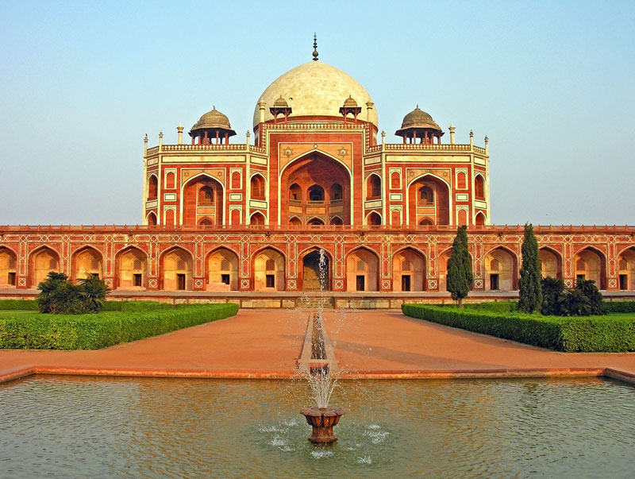
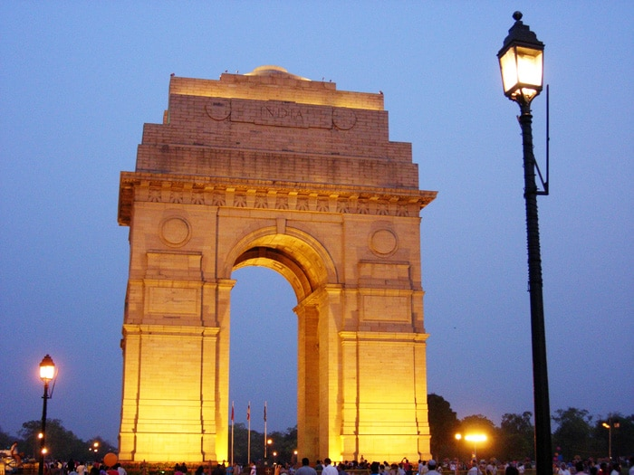
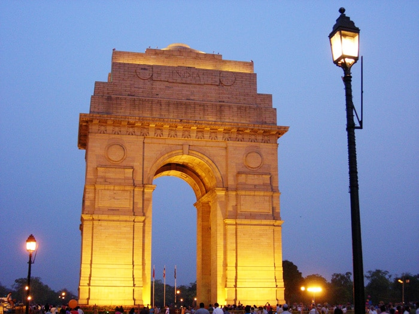
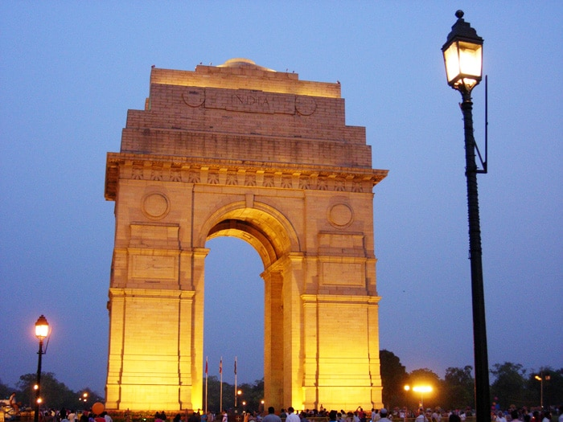
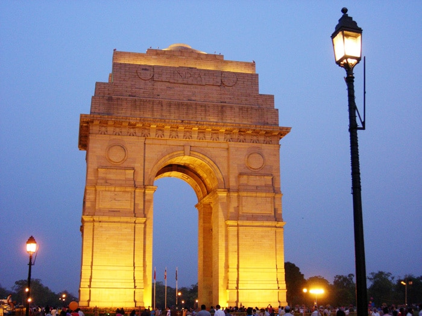

Delhi-The Capital Of India
 

 

Although planning a trip alone isn’t very interesting, it can certainly be more absorbing. It takes a lot of efforts to identify the right tourist destination that would give you all that you expect on a holiday. Once you have the destination decided, you need to further your research to find out the important tourist places in the destination. Then comes the travel plan and arrangements for accommodation. If your plan is to visit Delhi during your holidays, here are some suggestions that would help you with your plan. Here are places that you must visit in Delhi:
The Red Fort or Lal Qila is synonymous with the Mughal Empire in Delhi. Made entirely of red sandstone, this fort was designed using floral motifs and calligraphy on the walls.
Shaped like an octagon, the fort was commissioned by Shah Jahan in 1638. The site has been granted a UNESCO world heritage site status and it is the venue for the Indian Prime Minister’s Independence speech.
Standing at 73 metres high, the Qutub Minar is the highest tower in India, located at the famous Qutub in Delhi. The tower was built using a combination of Irani and Afghani architectural styles.
Along the sides of the tower, you can see inscriptions of scripture text and a few carvings. Just next to the Qutub Minar is the Quwwat-us-Islam Mosque – the first ever mosque built in India.
Located in the heart of the city, the India Gate monument was built by Edward Lutyens in honour of all the Indian and British soldiers who died during World War I.
Just next to the India Gate, there is another memorial called the Amar Jawan Jyoti that was built to honour Indian soldiers of the 1971 Indo-Pak war.
A wonderful haven to be found in the middle of the urban jungle, the one-acre wide Naini Lake offers an amazing experience being a lake right in the middle of bustling Delhi, at Model Town. Visitors can take a leisurely walk around the park or take a seat on any of the benches to be soothed by the surrounding trees as well as the cool breezes and the lapping waters of the lake.
Many more...